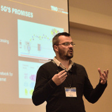
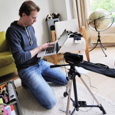

Media Platforms and Ecosystems
Catalysing innovations in the media industry
UDH, HDR, Net neutrality
Explore

Standardization
Boosting adoption of new media technologies
MPEG, DASH-IF, VR-IF, IETF, 3GPP
Explore

Demonstrators
New technologies and standards-to-be
Reference implementations, Proof Of Concepts
Explore